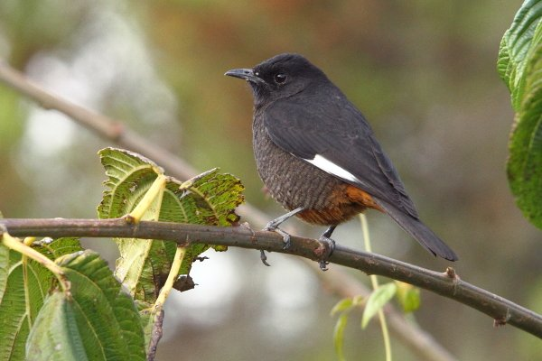
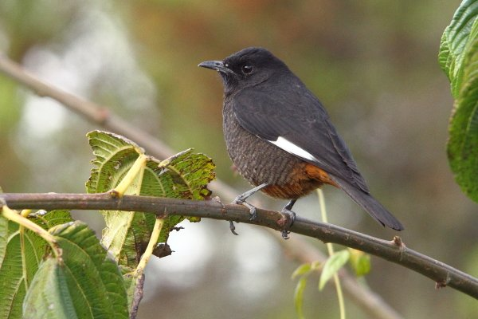

Endemic Birds
Ethiopia has over 800 species of birds, including several that are found only in the country. These include the Ethiopian endemic bird, Yellow-fronted parrot and the Abyssinian catbird.


Ethiopia has over 800 species of birds, including several that are found only in the country. These include the Ethiopian endemic bird, Yellow-fronted parrot and the Abyssinian catbird.
